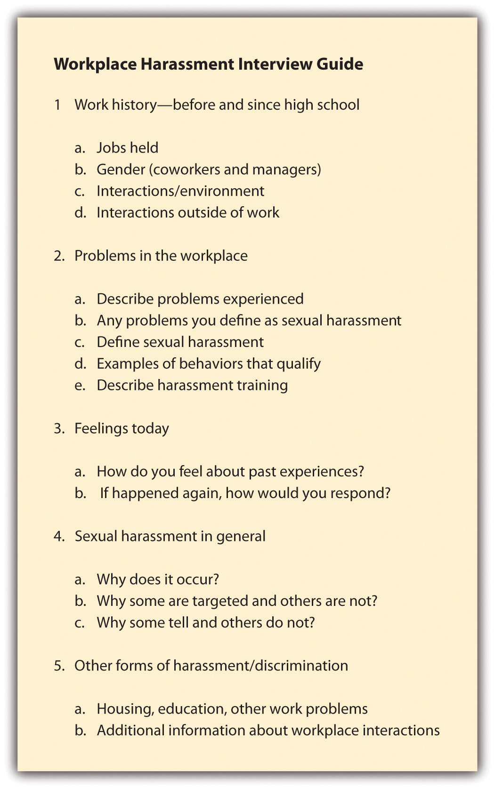
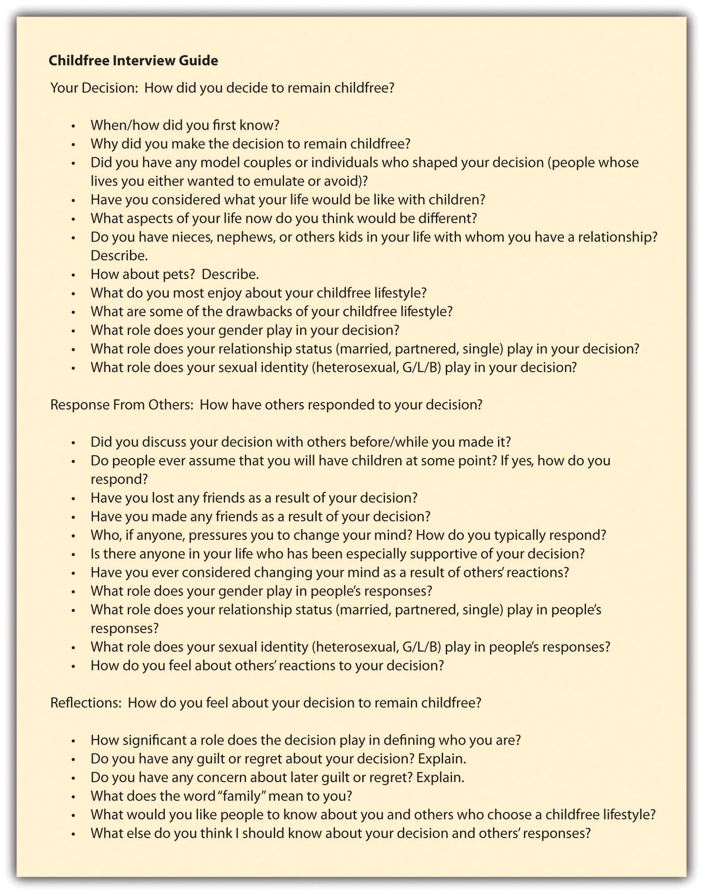

Today’s young men are delaying their entry into adulthood. That’s a nice way of saying they are “totally confused”; “cannot commit to their relationships, work, or lives”; and are “obsessed with never wanting to grow up.”These quotes come from a summary of reviews on the website dedicated to Kimmel’s book, Guyland: http://www.guyland.net. But don’t take my word for it. Take sociologist Michael Kimmel’s word. He interviewed 400 young men, ages 16 to 26, over the course of 4 years across the United States to learn how they made the transition from adolescence into adulthood. Since the results of Kimmel’s research were published in 2008,Kimmel, M. (2008). Guyland: The perilous world where boys become men. New York, NY: Harper Collins. his book has made quite a splash. Featured in news reports, on blogs, and in many book reviews, some claim Kimmel’s research “could save the humanity of many young men,”This quote from Gloria Steinem is provided on the website dedicated to Kimmel’s book, Guyland: http://www.guyland.net. while others suggest that its conclusions can only be applied to “fraternity guys and jocks.”This quote comes from “Thomas,” who wrote a review of Kimmel’s book on the following site: http://yesmeansyesblog.wordpress.com/2010/03/12/review-guyland. Whatever your take on Kimmel’s research, one thing remains true: We surely would not know nearly as much as we now do about the lives of many young American men were it not for interview research.
Knowing how to create and conduct a good interview is one of those skills you just can’t go wrong having. Interviews are used by market researchers to learn how to sell their products, journalists use interviews to get information from a whole host of people from VIPs to random people on the street. Regis Philbin (a sociology major in collegeThis information comes from the following list of famous sociology majors provided by the American Sociological Association on their website: http://www.asanet.org/students/famous.cfm.) used interviews to help television viewers get to know guests on his show, employers use them to make decisions about job offers, and even Ruth Westheimer (the famous sex doctor who has an MA in sociologyRead more about Dr. Ruth, her background, and her credentials at her website: http://www.drruth.com.) used interviews to elicit details from call-in participants on her radio show.Interested in hearing Dr. Ruth’s interview style? There are a number of audio clips from her radio show, Sexually Speaking, linked from the following site: http://www.cs.cmu.edu/~chuck/ruthpg. Warning: some of the images and audio clips on this page may be offensive to some readers. It seems everyone who’s anyone knows how to conduct an interview.
From the social scientific perspective, interviewsA method of data collection that involves two or more people exchanging information through a series of questions and answers. are a method of data collection that involves two or more people exchanging information through a series of questions and answers. The questions are designed by a researcher to elicit information from interview participant(s) on a specific topic or set of topics. Typically interviews involve an in-person meeting between two people, an interviewer and an interviewee. But as you’ll discover in this chapter, interviews need not be limited to two people, nor must they occur in person.
The question of when to conduct an interview might be on your mind. Interviews are an excellent way to gather detailed information. They also have an advantage over surveys; with a survey, if a participant’s response sparks some follow-up question in your mind, you generally don’t have an opportunity to ask for more information. What you get is what you get. In an interview, however, because you are actually talking with your study participants in real time, you can ask that follow-up question. Thus interviews are a useful method to use when you want to know the story behind responses you might receive in a written survey.
Interviews are also useful when the topic you are studying is rather complex, when whatever you plan to ask requires lengthy explanation, or when your topic or answers to your questions may not be immediately clear to participants who may need some time or dialogue with others in order to work through their responses to your questions. Also, if your research topic is one about which people will likely have a lot to say or will want to provide some explanation or describe some process, interviews may be the best method for you. For example, I used interviews to gather data about how people reach the decision not to have children and how others in their lives have responded to that decision. To understand these “how’s” I needed to have some back-and-forth dialogue with respondents. When they begin to tell me their story, inevitably new questions that hadn’t occurred to me from prior interviews come up because each person’s story is unique. Also, because the process of choosing not to have children is complex for many people, describing that process by responding to closed-ended questions on a survey wouldn’t work particularly well.
In sum, interview research is especially useful when the following are true:
Qualitative interviews are sometimes called intensive or in-depth interviewsA semistructured meeting between a researcher and respondent in which the researcher asks a series of open-ended questions; questions may be posed to respondents in slightly different ways or orders.. These interviews are semistructured; the researcher has a particular topic about which he or she would like to hear from the respondent, but questions are open ended and may not be asked in exactly the same way or in exactly the same order to each and every respondent. In in-depth interviews, the primary aim is to hear from respondents about what they think is important about the topic at hand and to hear it in their own words. In this section, we’ll take a look at how to conduct interviews that are specifically qualitative in nature, analyze qualitative interview data, and use some of the strengths and weaknesses of this method. In Section 9.4 "Issues to Consider for All Interview Types", we return to several considerations that are relevant to both qualitative and quantitative interviewing.
Qualitative interviews might feel more like a conversation than an interview to respondents, but the researcher is in fact usually guiding the conversation with the goal in mind of gathering information from a respondent. A key difference between qualitative and quantitative interviewing is that qualitative interviews contain open-ended questionsQuestions for which a researcher does not provide answer options; questions that require respondents to answer in their own words.. The meaning of this term is of course implied by its name, but just so that we’re sure to be on the same page, I’ll tell you that open-ended questions are questions that a researcher poses but does not provide answer options for. Open-ended questions are more demanding of participants than closed-ended questions, for they require participants to come up with their own words, phrases, or sentences to respond.
In a qualitative interview, the researcher usually develops a guide in advance that he or she then refers to during the interview (or memorizes in advance of the interview). An interview guideA list of topics or questions that an interviewer hopes to cover during the course of an interview. is a list of topics or questions that the interviewer hopes to cover during the course of an interview. It is called a guide because it is simply that—it is used to guide the interviewer, but it is not set in stone. Think of an interview guide like your agenda for the day or your to-do list—both probably contain all the items you hope to check off or accomplish, though it probably won’t be the end of the world if you don’t accomplish everything on the list or if you don’t accomplish it in the exact order that you have it written down. Perhaps new events will come up that cause you to rearrange your schedule just a bit, or perhaps you simply won’t get to everything on the list.
Interview guides should outline issues that a researcher feels are likely to be important, but because participants are asked to provide answers in their own words, and to raise points that they believe are important, each interview is likely to flow a little differently. While the opening question in an in-depth interview may be the same across all interviews, from that point on what the participant says will shape how the interview proceeds. This, I believe, is what makes in-depth interviewing so exciting. It is also what makes in-depth interviewing rather challenging to conduct. It takes a skilled interviewer to be able to ask questions; actually listen to respondents; and pick up on cues about when to follow up, when to move on, and when to simply let the participant speak without guidance or interruption.
I’ve said that interview guides can list topics or questions. The specific format of an interview guide might depend on your style, experience, and comfort level as an interviewer or with your topic. I have conducted interviews using different kinds of guides. In my interviews of young people about their experiences with workplace sexual harassment, the guide I used was topic based. There were few specific questions contained in the guide. Instead, I had an outline of topics that I hoped to cover, listed in an order that I thought it might make sense to cover them, noted on a sheet of paper. That guide can be seen in Figure 9.4 "Interview Guide Displaying Topics Rather Than Questions".
Figure 9.4 Interview Guide Displaying Topics Rather Than Questions
In my interviews with child-free adults, the interview guide contained questions rather than brief topics. One reason I took this approach is that this was a topic with which I had less familiarity than workplace sexual harassment. I’d been studying harassment for some time before I began those interviews, and I had already analyzed much quantitative survey data on the topic. When I began the child-free interviews, I was embarking on a research topic that was entirely new for me. I was also studying a topic about which I have strong personal feelings, and I wanted to be sure that I phrased my questions in a way that didn’t appear biased to respondents. To help ward off that possibility, I wrote down specific question wording in my interview guide. As I conducted more and more interviews, and read more and more of the literature on child-free adults, I became more confident about my ability to ask open-ended, nonbiased questions about the topic without the guide, but having some specific questions written down at the start of the data collection process certainly helped. The interview guide I used for the child-free project is displayed in Figure 9.5 "Interview Guide Displaying Questions Rather Than Topics".
Figure 9.5 Interview Guide Displaying Questions Rather Than Topics
As you might have guessed, interview guides do not appear out of thin air. They are the result of thoughtful and careful work on the part of a researcher. As you can see in both of the preceding guides, the topics and questions have been organized thematically and in the order in which they are likely to proceed (though keep in mind that the flow of a qualitative interview is in part determined by what a respondent has to say). Sometimes qualitative interviewers may create two versions of the interview guide: one version contains a very brief outline of the interview, perhaps with just topic headings, and another version contains detailed questions underneath each topic heading. In this case, the researcher might use the very detailed guide to prepare and practice in advance of actually conducting interviews and then just bring the brief outline to the interview. Bringing an outline, as opposed to a very long list of detailed questions, to an interview encourages the researcher to actually listen to what a participant is telling her. An overly detailed interview guide will be difficult to navigate through during an interview and could give respondents the misimpression that the interviewer is more interested in her questions than in the participant’s answers.
When beginning to construct an interview guide, brainstorming is usually the first step. There are no rules at the brainstorming stage—simply list all the topics and questions that come to mind when you think about your research question. Once you’ve got a pretty good list, you can begin to pare it down by cutting questions and topics that seem redundant and group like questions and topics together. If you haven’t done so yet, you may also want to come up with question and topic headings for your grouped categories. You should also consult the scholarly literature to find out what kinds of questions other interviewers have asked in studies of similar topics. As with quantitative survey research, it is best not to place very sensitive or potentially controversial questions at the very beginning of your qualitative interview guide. You need to give participants the opportunity to warm up to the interview and to feel comfortable talking with you. Finally, get some feedback on your interview guide. Ask your friends, family members, and your professors for some guidance and suggestions once you’ve come up with what you think is a pretty strong guide. Chances are they’ll catch a few things you hadn’t noticed.
In terms of the specific questions you include on your guide, there are a few guidelines worth noting. First, try to avoid questions that can be answered with a simple yes or no, or if you do choose to include such questions, be sure to include follow-up questions. Remember, one of the benefits of qualitative interviews is that you can ask participants for more information—be sure to do so. While it is a good idea to ask follow-up questions, try to avoid asking “why” as your follow-up question, as this particular question can come off as confrontational, even if that is not how you intend it. Often people won’t know how to respond to “why,” perhaps because they don’t even know why themselves. Instead of “why,” I recommend that you say something like, “Could you tell me a little more about that?” This allows participants to explain themselves further without feeling that they’re being doubted or questioned in a hostile way.
Also, try to avoid phrasing your questions in a leading way. For example, rather than asking, “Don’t you think that most people who don’t want kids are selfish?” you could ask, “What comes to mind for you when you hear that someone doesn’t want kids?” Or rather than asking, “What do you think about juvenile delinquents who drink and drive?” you could ask, “How do you feel about underage drinking?” or “What do you think about drinking and driving?” Finally, as noted earlier in this section, remember to keep most, if not all, of your questions open ended. The key to a successful qualitative interview is giving participants the opportunity to share information in their own words and in their own way.
Even after the interview guide is constructed, the interviewer is not yet ready to begin conducting interviews. The researcher next has to decide how to collect and maintain the information that is provided by participants. It is probably most common for qualitative interviewers to take audio recordings of the interviews they conduct.
Recording interviews allows the researcher to focus on her or his interaction with the interview participant rather than being distracted by trying to take notes. Of course, not all participants will feel comfortable being recorded and sometimes even the interviewer may feel that the subject is so sensitive that recording would be inappropriate. If this is the case, it is up to the researcher to balance excellent note-taking with exceptional question asking and even better listening. I don’t think I can understate the difficulty of managing all these feats simultaneously. Whether you will be recording your interviews or not (and especially if not), practicing the interview in advance is crucial. Ideally, you’ll find a friend or two willing to participate in a couple of trial runs with you. Even better, you’ll find a friend or two who are similar in at least some ways to your sample. They can give you the best feedback on your questions and your interview demeanor.
All interviewers should be aware of, give some thought to, and plan for several additional factors, such as where to conduct an interview and how to make participants as comfortable as possible during an interview. Because these factors should be considered by both qualitative and quantitative interviewers, we will return to them in Section 9.4 "Issues to Consider for All Interview Types" after we’ve had a chance to look at some of the unique features of each approach to interviewing.
Although our focus here has been on interviews for which there is one interviewer and one respondent, this is certainly not the only way to conduct a qualitative interview. Sometimes there may be multiple respondents present, and occasionally more than one interviewer may be present as well. When multiple respondents participate in an interview at the same time, this is referred to as a focus groupMultiple respondents participate in an interview at the same time.. Focus groups can be an excellent way to gather information because topics or questions that hadn’t occurred to the researcher may be brought up by other participants in the group. Having respondents talk with and ask questions of one another can be an excellent way of learning about a topic; not only might respondents ask questions that hadn’t occurred to the researcher, but the researcher can also learn from respondents’ body language around and interactions with one another. Of course, there are some unique ethical concerns associated with collecting data in a group setting. We’ll take a closer look at how focus groups work and describe some potential ethical concerns associated with them in Chapter 12 "Other Methods of Data Collection and Analysis".
Analysis of qualitative interview data typically begins with a set of transcripts of the interviews conducted. Obtaining said transcripts requires having either taken exceptionally good notes during an interview or, preferably, recorded the interview and then transcribed it. Transcribing interviews is usually the first step toward analyzing qualitative interview data. To transcribeCreating a complete, written copy of a recorded interview by playing the recording back and typing in each word that is spoken on the recording, noting who spoke which words. an interview means that you create, or someone whom you’ve hired creates, a complete, written copy of the recorded interview by playing the recording back and typing in each word that is spoken on the recording, noting who spoke which words. In general, it is best to aim for a verbatim transcription, one that reports word for word exactly what was said in the recorded interview. If possible, it is also best to include nonverbals in an interview’s written transcription. Gestures made by respondents should be noted, as should the tone of voice and notes about when, where, and how spoken words may have been emphasized by respondents.
If you have the time (or if you lack the resources to hire others), I think it is best to transcribe your interviews yourself. I never cease to be amazed by the things I recall from an interview when I transcribe it myself. If the researcher who conducted the interview transcribes it himself or herself, that person will also be able to make a note of nonverbal behaviors and interactions that may be relevant to analysis but that could not be picked up by audio recording. I’ve seen interviewees roll their eyes, wipe tears from their face, and even make obscene gestures that spoke volumes about their feelings but that could not have been recorded had I not remembered to include these details in their transcribed interviews.
The goal of analysisThe process of arriving at some inferences, lessons, or conclusions by condensing large amounts of data into relatively smaller bits of understandable information. is to reach some inferences, lessons, or conclusions by condensing large amounts of data into relatively smaller, more manageable bits of understandable information. Analysis of qualitative interview data often works inductively (Glaser & Strauss, 1967; Charmaz, 2006).For an additional reminder about what an inductive approach to analysis means, see Chapter 2 "Linking Methods With Theory". If you would like to learn more about inductive qualitative data analysis, I recommend two titles: Glaser, B. G., & Strauss, A. L. (1967). The discovery of grounded theory: Strategies for qualitative research. Chicago, IL: Aldine; Charmaz, K. (2006). Constructing grounded theory: A practical guide through qualitative analysis. Thousand Oaks, CA: Sage. To move from the specific observations an interviewer collects to identifying patterns across those observations, qualitative interviewers will often begin by reading through transcripts of their interviews and trying to identify codes. A codeA shorthand representation of some more complex set of issues or ideas. is a shorthand representation of some more complex set of issues or ideas. In this usage, the word code is a noun. But it can also be a verb. The process of identifying codes in one’s qualitative data is often referred to as coding. Coding involves identifying themes across interview data by reading and rereading (and rereading again) interview transcripts until the researcher has a clear idea about what sorts of themes come up across the interviews.
Qualitative researcher and textbook author Kristin Esterberg (2002)Esterberg, K. G. (2002). Qualitative methods in social research. Boston, MA: McGraw-Hill. describes coding as a multistage process. Esterberg suggests that there are two types of coding: open coding and focused coding. To analyze qualitative interview data, one can begin by open codingThe first stage of developing codes in qualitative data; involves reading data with an open mind and jotting down themes or categories that various bits of data seem to suggest. transcripts. This means that you read through each transcript, line by line, and make a note of whatever categories or themes seem to jump out to you. At this stage, it is important that you not let your original research question or expectations about what you think you might find cloud your ability to see categories or themes. It’s called open coding for a reason—keep an open mind. Open coding will probably require multiple go-rounds. As you read through your transcripts, it is likely that you’ll begin to see some commonalities across the categories or themes that you’ve jotted down. Once you do, you might begin focused coding.
Focused codingA later stage of developing codes in qualitative data; occurs after open coding and involves collapsing or narrowing themes and categories identified in open coding, succinctly naming them, describing them, and identifying passages of data that represent them. involves collapsing or narrowing themes and categories identified in open coding by reading through the notes you made while conducting open coding. Identify themes or categories that seem to be related, perhaps merging some. Then give each collapsed/merged theme or category a name (or code), and identify passages of data that fit each named category or theme. To identify passages of data that represent your emerging codes, you’ll need to read through your transcripts yet again (and probably again). You might also write up brief definitions or descriptions of each code. Defining codes is a way of making meaning of your data and of developing a way to talk about your findings and what your data mean. Guess what? You are officially analyzing data!
As tedious and laborious as it might seem to read through hundreds of pages of transcripts multiple times, sometimes getting started with the coding process is actually the hardest part. If you find yourself struggling to identify themes at the open coding stage, ask yourself some questions about your data. The answers should give you a clue about what sorts of themes or categories you are reading. In their text on analyzing qualitative data, Lofland and Lofland (1995)Lofland, J., & Lofland, L. H. (1995). Analyzing social settings: A guide to qualitative observation and analysis (3rd ed.) Belmont, CA: Wadsworth. identify a set of questions that I find very useful when coding qualitative data. They suggest asking the following:
Asking yourself these questions about the passages of data that you’re reading can help you begin to identify and name potential themes and categories.
Still feeling uncertain about how this process works? Sometimes it helps to see how interview passages translate into codes. In Table 9.1 "Interview Coding Example", I present two codes that emerged from the inductive analysis of transcripts from my interviews with child-free adults. I also include a brief description of each code and a few (of many) interview excerpts from which each code was developed.
Table 9.1 Interview Coding Example
| Code | Code description | Interview excerpts |
|---|---|---|
| Reify gender | Participants reinforce heteronormative ideals in two ways: (a) by calling up stereotypical images of gender and family and (b) by citing their own “failure” to achieve those ideals. | “The woman is more involved with taking care of the child. [As a woman] I’d be the one waking up more often to feed the baby and more involved in the personal care of the child, much more involved. I would have more responsibilities than my partner. I know I would feel that burden more than if I were a man.” |
| “I don’t have that maternal instinct.” | ||
| “I look at all my high school friends on Facebook, and I’m the only one who isn’t married and doesn’t have kids. I question myself, like if there’s something wrong with me that I don’t have that.” | ||
| “I feel badly that I’m not providing my parents with grandchildren.” | ||
| Resist Gender | Participants resist gender norms in two ways: (a) by pushing back against negative social responses and (b) by redefining family for themselves in a way that challenges normative notions of family. | “Am I less of a woman because I don’t have kids? I don’t think so!” |
| “I think if they’re gonna put their thoughts on me, I’m putting it back on them. When they tell me, ‘Oh, Janet, you won’t have lived until you’ve had children. It’s the most fulfilling thing a woman can do!’ then I just name off the 10 fulfilling things I did in the past week that they didn’t get to do because they have kids.” | ||
| “Family is the group of people that you want to be with. That’s it.” | ||
| “The whole institution of marriage as a transfer of property from one family to another and the supposition that the whole purpose in life is to create babies is pretty ugly. My definition of family has nothing to do with that. It’s about creating a better life for ourselves.” |
As you might imagine, wading through all these data is quite a process. Just as quantitative researchers rely on the assistance of special computer programs designed to help with sorting through and analyzing their data, so, too, do qualitative researchers. Where quantitative researchers have SPSS and MicroCase (and many others), qualitative researchers have programs such as NVivo (http://www.qsrinternational.com) and Atlasti (http://www.atlasti.com). These are programs specifically designed to assist qualitative researchers with organizing, managing, sorting, and analyzing large amounts of qualitative data. The programs work by allowing researchers to import interview transcripts contained in an electronic file and then label or code passages, cut and paste passages, search for various words or phrases, and organize complex interrelationships among passages and codes.
In sum, the following excerpt, from a paper analyzing the workplace sexual harassment interview data I have mentioned previously, summarizes how the process of analyzing qualitative interview data often works:
All interviews were tape recorded and then transcribed and imported into the computer program NVivo. NVivo is designed to assist researchers with organizing, managing, interpreting, and analyzing non-numerical, qualitative data. Once the transcripts, ranging from 20 to 60 pages each, were imported into NVivo, we first coded the data according to the themes outlined in our interview guide. We then closely reviewed each transcript again, looking for common themes across interviews and coding like categories of data together. These passages, referred to as codes or “meaning units” (Weiss, 2004),Weiss, R. S. (2004). In their own words: Making the most of qualitative interviews. Contexts, 3, 44–51. were then labeled and given a name intended to succinctly portray the themes present in the code. For this paper, we coded every quote that had something to do with the labeling of harassment. After reviewing passages within the “labeling” code, we placed quotes that seemed related together, creating several sub-codes. These sub-codes were named and are represented by the three subtitles within the findings section of this paper.Our three subcodes were the following: (a) “It’s different because you’re in high school”: Sociability and socialization at work; (b) Looking back: “It was sexual harassment; I just didn’t know it at the time”; and (c) Looking ahead: New images of self as worker and of workplace interactions. Once our sub-codes were labeled, we re-examined the interview transcripts, coding additional quotes that fit the theme of each sub-code. (Blackstone, Houle, & Uggen, 2006)Blackstone, A., Houle, J., & Uggen, C. “At the time, I thought it was great”: Age, experience, and workers’ perceptions of sexual harassment. Presented at the Annual Meeting of the American Sociological Association, Montreal, QC, August 2006. Currently under review.
As the preceding sections have suggested, qualitative interviews are an excellent way to gather detailed information. Whatever topic is of interest to the researcher employing this method can be explored in much more depth than with almost any other method. Not only are participants given the opportunity to elaborate in a way that is not possible with other methods such as survey research, but they also are able share information with researchers in their own words and from their own perspectives rather than being asked to fit those perspectives into the perhaps limited response options provided by the researcher. And because qualitative interviews are designed to elicit detailed information, they are especially useful when a researcher’s aim is to study social processes, or the “how” of various phenomena. Yet another, and sometimes overlooked, benefit of qualitative interviews that occurs in person is that researchers can make observations beyond those that a respondent is orally reporting. A respondent’s body language, and even her or his choice of time and location for the interview, might provide a researcher with useful data.
Of course, all these benefits do not come without some drawbacks. As with quantitative survey research, qualitative interviews rely on respondents’ ability to accurately and honestly recall whatever details about their lives, circumstances, thoughts, opinions, or behaviors are being asked about. As Esterberg (2002) puts it, “If you want to know about what people actually do, rather than what they say they do, you should probably use observation [instead of interviews].”Esterberg, K. G. (2002). Qualitative methods in social research. Boston, MA: McGraw-Hill. Further, as you may have already guessed, qualitative interviewing is time intensive and can be quite expensive. Creating an interview guide, identifying a sample, and conducting interviews are just the beginning. Transcribing interviews is labor intensive—and that’s before coding even begins. It is also not uncommon to offer respondents some monetary incentive or thank-you for participating. Keep in mind that you are asking for more of participants’ time than if you’d simply mailed them a questionnaire containing closed-ended questions. Conducting qualitative interviews is not only labor intensive but also emotionally taxing. When I interviewed young workers about their sexual harassment experiences, I heard stories that were shocking, infuriating, and sad. Seeing and hearing the impact that harassment had had on respondents was difficult. Researchers embarking on a qualitative interview project should keep in mind their own abilities to hear stories that may be difficult to hear.
Quantitative interviews are similar to qualitative interviews in that they involve some researcher/respondent interaction. But the process of conducting and analyzing findings from quantitative interviews also differs in several ways from that of qualitative interviews. Each approach also comes with its own unique set of strengths and weaknesses. We’ll explore those differences here.
Much of what we learned in the previous chapter on survey research applies to quantitative interviews as well. In fact, quantitative interviews are sometimes referred to as survey interviews because they resemble survey-style question-and-answer formats. They might also be called standardized interviewsInterviews during which the same questions are asked of every participant in the same way, and survey-style question-and-answer formats are utilized.. The difference between surveys and standardized interviews is that questions and answer options are read to respondents rather than having respondents complete a questionnaire on their own. As with questionnaires, the questions posed in a standardized interview tend to be closed ended.See Chapter 8 "Survey Research: A Quantitative Technique" for the definition of closed ended. There are instances in which a quantitative interviewer might pose a few open-ended questions as well. In these cases, the coding process works somewhat differently than coding in-depth interview data. We’ll describe this process in the following subsection.
In quantitative interviews, an interview scheduleA document containing the list of questions and answer options that quantitative interviewers read to respondents. is used to guide the researcher as he or she poses questions and answer options to respondents. An interview schedule is usually more rigid than an interview guide. It contains the list of questions and answer options that the researcher will read to respondents. Whereas qualitative researchers emphasize respondents’ roles in helping to determine how an interview progresses, in a quantitative interview, consistency in the way that questions and answer options are presented is very important. The aim is to pose every question-and-answer option in the very same way to every respondent. This is done to minimize interviewer effectOccurs when an interviewee is influenced by how or when questions and answer options are presented by an interviewer., or possible changes in the way an interviewee responds based on how or when questions and answer options are presented by the interviewer.
Quantitative interviews may be recorded, but because questions tend to be closed ended, taking notes during the interview is less disruptive than it can be during a qualitative interview. If a quantitative interview contains open-ended questions, however, recording the interview is advised. It may also be helpful to record quantitative interviews if a researcher wishes to assess possible interview effect. Noticeable differences in responses might be more attributable to interviewer effect than to any real respondent differences. Having a recording of the interview can help a researcher make such determinations.
Quantitative interviewers are usually more concerned with gathering data from a large, representative sample. As you might imagine, collecting data from many people via interviews can be quite laborious. Technological advances in telephone interviewing procedures can assist quantitative interviewers in this process. One concern about telephone interviewing is that fewer and fewer people list their telephone numbers these days, but random digit dialing (RDD) takes care of this problem. RDD programs dial randomly generated phone numbers for researchers conducting phone interviews. This means that unlisted numbers are as likely to be included in a sample as listed numbers (though, having used this software for quantitative interviewing myself, I will add that folks with unlisted numbers are not always very pleased to receive calls from unknown researchers). Computer-assisted telephone interviewing (CATI) programs have also been developed to assist quantitative survey researchers. These programs allow an interviewer to enter responses directly into a computer as they are provided, thus saving hours of time that would otherwise have to be spent entering data into an analysis program by hand.
Conducting quantitative interviews over the phone does not come without some drawbacks. Aside from the obvious problem that not everyone has a phone, research shows that phone interviews generate more fence-sitters than in-person interviews (Holbrook, Green, & Krosnick, 2003).Holbrook, A. L., Green, M. C., & Krosnick, J. A. (2003). Telephone versus face-to-face interviewing of national probability samples with long questionnaires: Comparisons of respondent satisficing and social desirability response bias. Public Opinion Quarterly, 67, 79–125. Responses to sensitive questions or those that respondents view as invasive are also generally less accurate when data are collected over the phone as compared to when they are collected in person. I can vouch for this latter point from personal experience. While conducting quantitative telephone interviews when I worked at a research firm, it was not terribly uncommon for respondents to tell me that they were green or purple when I asked them to report their racial identity.
As with the analysis of survey data, analysis of quantitative interview data usually involves coding response options numerically, entering numeric responses into a data analysis computer program, and then running various statistical commands to identify patterns across responses. Section 8.5 "Analysis of Survey Data" of Chapter 8 "Survey Research: A Quantitative Technique" describes the coding process for quantitative data. But what happens when quantitative interviews ask open-ended questions? In this case, responses are typically numerically coded, just as closed-ended questions are, but the process is a little more complex than simply giving a “no” a label of 0 and a “yes” a label of 1.
In some cases, quantitatively coding open-ended interview questions may work inductively, as described in Section 9.2.2 "Analysis of Qualitative Interview Data". If this is the case, rather than ending with codes, descriptions of codes, and interview excerpts, the researcher will assign a numerical value to codes and may not utilize verbatim excerpts from interviews in later reports of results. Keep in mind, as described in Chapter 1 "Introduction", that with quantitative methods the aim is to be able to represent and condense data into numbers. The quantitative coding of open-ended interview questions is often a deductive process. The researcher may begin with an idea about likely responses to his or her open-ended questions and assign a numerical value to each likely response. Then the researcher will review participants’ open-ended responses and assign the numerical value that most closely matches the value of his or her expected response.
Quantitative interviews offer several benefits. The strengths and weakness of quantitative interviews tend to be couched in comparison to those of administering hard copy questionnaires. For example, response rates tend to be higher with interviews than with mailed questionnaires (Babbie, 2010).Babbie, E. (2010). The practice of social research (12th ed.). Belmont, CA: Wadsworth. That makes sense—don’t you find it easier to say no to a piece of paper than to a person? Quantitative interviews can also help reduce respondent confusion. If a respondent is unsure about the meaning of a question or answer option on a questionnaire, he or she probably won’t have the opportunity to get clarification from the researcher. An interview, on the other hand, gives the researcher an opportunity to clarify or explain any items that may be confusing.
As with every method of data collection we’ve discussed, there are also drawbacks to conducting quantitative interviews. Perhaps the largest, and of most concern to quantitative researchers, is interviewer effect. While questions on hard copy questionnaires may create an impression based on the way they are presented, having a person administer questions introduces a slew of additional variables that might influence a respondent. As I’ve said, consistency is key with quantitative data collection—and human beings are not necessarily known for their consistency. Interviewing respondents is also much more time consuming and expensive than mailing questionnaires. Thus quantitative researchers may opt for written questionnaires over interviews on the grounds that they will be able to reach a large sample at a much lower cost than were they to interact personally with each and every respondent.
While quantitative interviews resemble survey research in their question/answer formats, they share with qualitative interviews the characteristic that the researcher actually interacts with her or his subjects. The fact that the researcher interacts with his or her subjects creates a few complexities that deserve attention. We’ll examine those here.
First and foremost, interviewers must be aware of and attentive to the power differential between themselves and interview participants. The interviewer sets the agenda and leads the conversation. While qualitative interviewers aim to allow participants to have some control over which or to what extent various topics are discussed, at the end of the day it is the researcher who is in charge (at least that is how most respondents will perceive it to be). As the researcher, you are asking someone to reveal things about themselves they may not typically share with others. Also, you are generally not reciprocating by revealing much or anything about yourself. All these factors shape the power dynamics of an interview.
A number of excellent pieces have been written dealing with issues of power in research and data collection. Feminist researchers in particular paved the way in helping researchers think about and address issues of power in their work (Oakley, 1981).Oakley, A. (1981). Interviewing women: A contradiction in terms. In H. Roberts (Ed.), Doing feminist research (pp. 30–61). London, UK: Routledge & Kegan Paul. Suggestions for overcoming the power imbalance between researcher and respondent include having the researcher reveal some aspects of her own identity and story so that the interview is a more reciprocal experience rather than one-sided, allowing participants to view and edit interview transcripts before the researcher uses them for analysis, and giving participants an opportunity to read and comment on analysis before the researcher shares it with others through publication or presentation (Reinharz, 1992; Hesse-Biber, Nagy, & Leavy, 2007).Reinharz, S. (1992). Feminist methods in social research. New York, NY: Oxford University Press; Hesse-Biber, S. N., & Leavy, P. L. (Eds.). (2007). Feminist research practice: A primer. Thousand Oaks, CA: Sage. On the other hand, some researchers note that sharing too much with interview participants can give the false impression that there is no power differential, when in reality researchers retain the ability to analyze and present participants’ stories in whatever way they see fit (Stacey, 1988).Stacey, J. (1988). Can there be a feminist ethnography? Women’s Studies International Forum, 11, 21–27.
However you feel about sharing details about your background with an interview participant, another way to balance the power differential between yourself and your interview participants is to make the intent of your research very clear to the subjects. Share with them your rationale for conducting the research and the research question(s) that frame your work. Be sure that you also share with subjects how the data you gather will be used and stored. Also, be sure that participants understand how their privacy will be protected including who will have access to the data you gather from them and what procedures, such as using pseudonyms, you will take to protect their identities. Many of these details will be covered by your institutional review board’s informed consent procedures and requirements, but even if they are not, as researchers we should be attentive to how sharing information with participants can help balance the power differences between ourselves and those who participate in our research.
There are no easy answers when it comes to handling the power differential between the researcher and researched, and even social scientists do not agree on the best approach for doing so. It is nevertheless an issue to be attentive to when conducting any form of research, particularly those that involve interpersonal interactions and relationships with research participants.
One way to balance the power between researcher and respondent is to conduct the interview in a location of the participants’ choosing, where he or she will feel most comfortable answering your questions. Interviews can take place in any number of locations—in respondents’ homes or offices, researchers’ homes or offices, coffee shops, restaurants, public parks, or hotel lobbies, to name just a few possibilities. I have conducted interviews in all these locations, and each comes with its own set of benefits and its own challenges. While I would argue that allowing the respondent to choose the location that is most convenient and most comfortable for her or him is of utmost importance, identifying a location where there will be few distractions is also important. For example, some coffee shops and restaurants are so loud that recording the interview can be a challenge. Other locations may present different sorts of distractions. For example, I have conducted several interviews with parents who, out of necessity, spent more time attending to their children during an interview than responding to my questions (of course, depending on the topic of your research, the opportunity to observe such interactions could be invaluable). As an interviewer, you may want to suggest a few possible locations, and note the goal of avoiding distractions, when you ask your respondents to choose a location.
Of course, the extent to which a respondent should be given complete control over choosing a location must also be balanced by accessibility of the location to you, the interviewer, and by your safety and comfort level with the location. I once agreed to conduct an interview in a respondent’s home only to discover on arriving that the living room where we conducted the interview was decorated wall to wall with posters representing various white power organizations displaying a variety of violently racist messages. Though the topic of the interview had nothing to do with the topic of the respondent’s home décor, the discomfort, anger, and fear I felt during the entire interview consumed me and certainly distracted from my ability to carry on the interview. In retrospect, I wish I had thought to come up with some excuse for needing to reschedule the interview and then arranged for it to happen in a more neutral location. While it is important to conduct interviews in a location that is comfortable for respondents, doing so should never come at the expense of your safety.
Finally, a unique feature of interviews is that they require some social interaction, which means that to at least some extent, a relationship is formed between interviewer and interviewee. While there may be some differences in how the researcher-respondent relationship works depending on whether your interviews are qualitative or quantitative, one essential relationship element is the same: R-E-S-P-E-C-T.You should know by now that I can’t help myself. If you, too, now have Aretha Franklin on the brain, feel free to excuse yourself for a moment to enjoy a song and dance: http://www.youtube.com/watch?v=z0XAI-PFQcA. A good rapport between you and the person you interview is crucial to successful interviewing. RapportThe sense of connection a researcher establishes with a participant. is the sense of connection you establish with a participant. Some argue that this term is too clinical, and perhaps it implies that a researcher tricks a participant into thinking they are closer than they really are (Esterberg, 2002).Esterberg, K. G. (2002). Qualitative methods in social research. Boston, MA: McGraw-Hill. While it is unfortunately true that some researchers might adopt this misguided approach to rapport, that is not the sense in which I use the term here nor is that the sort of rapport I advocate researchers attempt to establish with their subjects. Instead, as already mentioned, it is respect that is key.
There are no big secrets or tricks for how to show respect for research participants. At its core, the interview interaction should not differ from any other social interaction in which you show gratitude for a person’s time and respect for a person’s humanity. It is crucial that you, as the interviewer, conduct the interview in a way that is culturally sensitive. In some cases, this might mean educating yourself about your study population and even receiving some training to help you learn to effectively communicate with your research participants. Do not judge your research participants; you are there to listen to them, and they have been kind enough to give you their time and attention. Even if you disagree strongly with what a participant shares in an interview, your job as the researcher is to gather the information being shared with you, not to make personal judgments about it. In case you still feel uncertain about how to establish rapport and show your participants respect, I will leave you with a few additional bits of advice.
Developing good rapport requires good listening. In fact, listening during an interview is an active, not a passive, practice. Active listeningOccurs when an interviewer demonstrates that he or she understands what an interview participant has said; requires probes or follow-up questions that indicate such understanding. means that you, the researcher, participate with the respondent by showing that you understand and follow whatever it is that he or she is telling you (Devault, 1990).For more on the practice of listening, especially in qualitative interviews, see Devault, M. (1990). Talking and listening from women’s standpoint: Feminist strategies for interviewing and analysis. Social Problems, 37, 96–116. The questions you ask respondents should indicate that you’ve actually heard what they’ve just said. Active listening probably means that you will probe the respondent for more information from time to time throughout the interview. A probeA request, on the part of an interviewer, for more information from an interview participant. is a request for more information. Both qualitative and quantitative interviewers probe respondents, though the way they probe usually differs. In quantitative interviews, probing should be uniform. Often quantitative interviewers will predetermine what sorts of probes they will use. As an employee at the research firm I’ve mentioned before, our supervisors used to randomly listen in on quantitative telephone interviews we conducted. We were explicitly instructed not to use probes that might make us appear to agree or disagree with what respondents said. So “yes” or “I agree” or a questioning “hmmmm” were discouraged. Instead, we could respond with “thank you” to indicate that we’d heard a respondent. We could use “yes” or “no” if, and only if, a respondent had specifically asked us if we’d heard or understood what they had just said.
In some ways qualitative interviews better lend themselves to following up with respondents and asking them to explain, describe, or otherwise provide more information. This is because qualitative interviewing techniques are designed to go with the flow and take whatever direction the respondent goes during the interview. Nevertheless, it is worth your time to come up with helpful probes in advance of an interview even in the case of a qualitative interview. You certainly do not want to find yourself stumped or speechless after a respondent has just said something about which you’d like to hear more. This is another reason that practicing your interview in advance with people who are similar to those in your sample is a good idea.